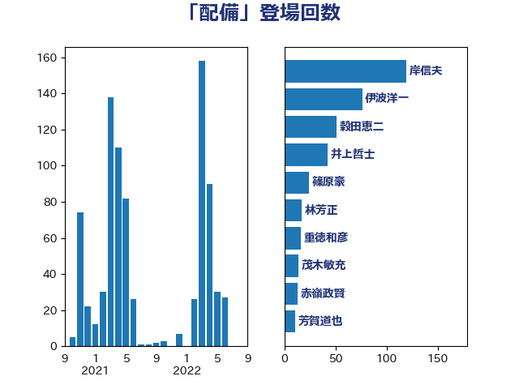

単語「配備」

| 岸信夫 | 自由民主党 | 119 回 |
| 伊波洋一 | 無所属 | 76 回 |
| 穀田恵二 | 日本共産党 | 51 回 |
| 井上哲士 | 日本共産党 | 42 回 |
| 篠原豪 | 立憲民主党 | 24 回 |
| 林芳正 | 自由民主党 | 17 回 |
| 重徳和彦 | 立憲民主党 | 16 回 |
| 茂木敏充 | 自由民主党 | 14 回 |
| 赤嶺政賢 | 日本共産党 | 13 回 |
| 芳賀道也 | 国民民主党 | 11 回 |
| 萩生田光一 | 自由民主党 | 9 回 |
| 塩田博昭 | 公明党 | 7 回 |
| 岡田克也 | 立憲民主党 | 7 回 |
| 泉健太 | 立憲民主党 | 7 回 |
| 渡辺周 | 立憲民主党 | 7 回 |
| 福山哲郎 | 立憲民主党 | 7 回 |
| 岸田文雄 | 自由民主党 | 6 回 |
| 川合孝典 | 国民民主党 | 6 回 |
| 野上浩太郎 | 自由民主党 | 6 回 |
| 青柳仁士 | 日本維新の会 | 6 回 |
| 佐藤正久 | 自由民主党 | 5 回 |
| 太栄志 | 立憲民主党 | 5 回 |
| 金子恭之 | 自由民主党 | 5 回 |
| 小沢雅仁 | 立憲民主党 | 4 回 |
| 山添拓 | 日本共産党 | 4 回 |
| 赤羽一嘉 | 公明党 | 4 回 |
| 鈴木敦 | 国民民主党 | 4 回 |
| 高橋光男 | 公明党 | 4 回 |
| 中川貴元 | 自由民主党 | 3 回 |
| 伊藤岳 | 日本共産党 | 3 回 |
| 安江伸夫 | 公明党 | 3 回 |
| 山下雄平 | 自由民主党 | 3 回 |
| 岩谷良平 | 日本維新の会 | 3 回 |
| 斉藤鉄夫 | 公明党 | 3 回 |
| 柿沢未途 | 無所属 | 3 回 |
| 水岡俊一 | 立憲民主党 | 3 回 |
| 熊谷裕人 | 立憲民主党 | 3 回 |
| 秋葉賢也 | 自由民主党 | 3 回 |
| 菅義偉 | 自由民主党 | 3 回 |
| 高橋千鶴子 | 日本共産党 | 3 回 |
| ながえ孝子 | 無所属 | 2 回 |
| 小森卓郎 | 自由民主党 | 2 回 |
| 小池晃 | 日本共産党 | 2 回 |
| 平井卓也 | 自由民主党 | 2 回 |
| 掘井健智 | 日本維新の会 | 2 回 |
| 杉本和巳 | 日本維新の会 | 2 回 |
| 梶山弘志 | 自由民主党 | 2 回 |
| 森まさこ | 自由民主党 | 2 回 |
| 浅田均 | 日本維新の会 | 2 回 |
| 浦野靖人 | 日本維新の会 | 2 回 |
| 田村智子 | 日本共産党 | 2 回 |
| 田村貴昭 | 日本共産党 | 2 回 |
| 舩後靖彦 | れいわ新選組 | 2 回 |
| 鈴木俊一 | 自由民主党 | 2 回 |
| 三原じゅん子 | 自由民主党 | 1 回 |
| 三浦信祐 | 公明党 | 1 回 |
| 上杉謙太郎 | 自由民主党 | 1 回 |
| 上田清司 | 国民民主党 | 1 回 |
| 伊東信久 | 日本維新の会 | 1 回 |
| 伊藤俊輔 | 立憲民主党 | 1 回 |
| 倉林明子 | 日本共産党 | 1 回 |
| 勝目康 | 自由民主党 | 1 回 |
| 原口一博 | 立憲民主党 | 1 回 |
| 吉良よし子 | 日本共産党 | 1 回 |
| 塩川鉄也 | 日本共産党 | 1 回 |
| 大口善徳 | 公明党 | 1 回 |
| 大西英男 | 自由民主党 | 1 回 |
| 宮本周司 | 自由民主党 | 1 回 |
| 山口那津男 | 公明党 | 1 回 |
| 岬麻紀 | 日本維新の会 | 1 回 |
| 川崎ひでと | 自由民主党 | 1 回 |
| 後藤茂之 | 自由民主党 | 1 回 |
| 斎藤嘉隆 | 立憲民主党 | 1 回 |
| 新垣邦男 | 立憲民主党 | 1 回 |
| 朝日健太郎 | 自由民主党 | 1 回 |
| 末松義規 | 立憲民主党 | 1 回 |
| 本田顕子 | 自由民主党 | 1 回 |
| 柳ヶ瀬裕文 | 日本維新の会 | 1 回 |
| 榛葉賀津也 | 国民民主党 | 1 回 |
| 武田良太 | 自由民主党 | 1 回 |
| 片山さつき | 自由民主党 | 1 回 |
| 玄葉光一郎 | 立憲民主党 | 1 回 |
| 玉木雄一郎 | 国民民主党 | 1 回 |
| 田村憲久 | 自由民主党 | 1 回 |
| 矢倉克夫 | 公明党 | 1 回 |
| 石橋通宏 | 立憲民主党 | 1 回 |
| 稲田朋美 | 自由民主党 | 1 回 |
| 簗和生 | 自由民主党 | 1 回 |
| 紙智子 | 日本共産党 | 1 回 |
| 美延映夫 | 日本維新の会 | 1 回 |
| 船橋利実 | 自由民主党 | 1 回 |
| 葉梨康弘 | 自由民主党 | 1 回 |
| 蓮舫 | 立憲民主党 | 1 回 |
| 西村智奈美 | 立憲民主党 | 1 回 |
| 赤池誠章 | 自由民主党 | 1 回 |
| 逢坂誠二 | 立憲民主党 | 1 回 |
| 長妻昭 | 立憲民主党 | 1 回 |
| 長峯誠 | 自由民主党 | 1 回 |
| 阿部知子 | 立憲民主党 | 1 回 |
| 青山周平 | 自由民主党 | 1 回 |
| 青山大人 | 立憲民主党 | 1 回 |
| 青木愛 | 立憲民主党 | 1 回 |
| 音喜多駿 | 日本維新の会 | 1 回 |
| 馬場伸幸 | 日本維新の会 | 1 回 |
| 鬼木誠 | 立憲民主党 | 1 回 |